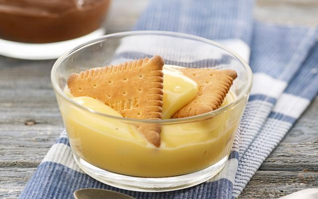

Vanillepudding
Een basisrecept dat eeuwig zal blijven scoren.

INGREDIENTEN voor 4 personen
- Petit Beurres 4
- griessuiker 2 el
- vanillesuiker 1 zakje
- vanillepuddingpoeder (50g)1 zakje
- ei 1
- volle melk8 dl
- zout1 mespuntje
Bereiding
- Klop het ei los met de suiker.
- Los het puddingpoeder op in een kopje koude melk.
Roer goed glad.
- Breng de rest van de melk aan de kook met de vanillesuiker
en een snuifje zout. Doe er, zodra de melk kookt, het
puddingpoeder bij. Roer voortdurend. Blijf roeren tot de
melk weer tegen de kook aan is en de pudding begint te
binden. Haal van het vuur. Doe er het ei bij en roer
flink om, tot het ei volledig opgenomen is.
- Verdeel de pudding over kleine kommetjes. Laat afkoelen.
Serveer op kamertemperatuur,
met een petit-beurre koekje.